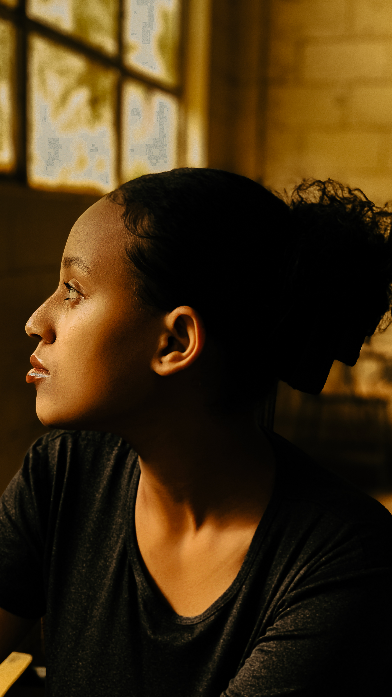

About Me

I'm Adoniram Fkre — a creative professional passionate about building beautiful, purposeful projects that connect with people on a deeper level.
With a keen eye for aesthetics and a rigorous approach to craft, I bridge the gap between design and technology to create experiences that are not only functional but genuinely memorable.
Every project is an opportunity to push boundaries, question conventions, and bring something entirely new into the world.